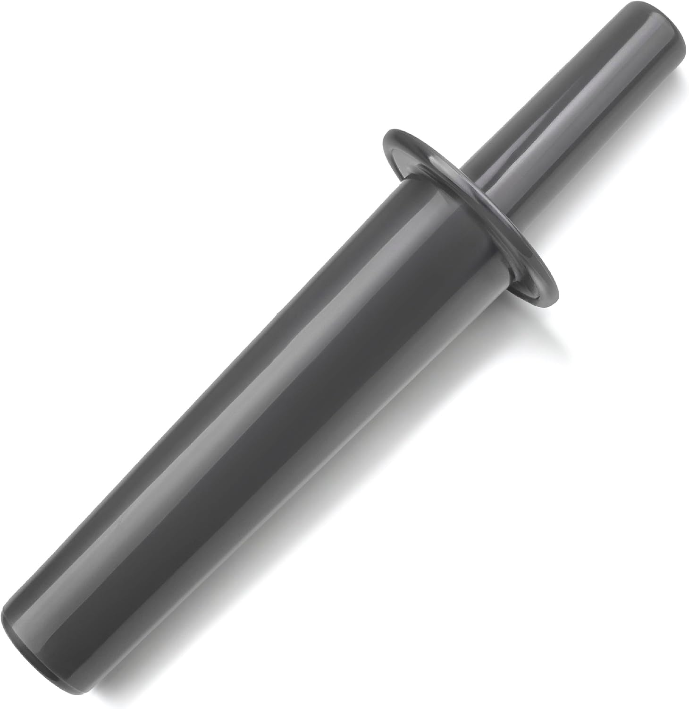

Compatible with standard 64oz containers. This is a compatible replacement part, not an OEM Vitamix product.

This is a compatible replacement part, not an OEM Vitamix product.
Check your blender model number (usually printed under the base). Compatible with standard 64oz containers. If your model is not listed, message us on WhatsApp — we reply within 24–48 hours.
No. BlendCraft parts are compatible replacement parts, engineered to match OEM performance at a lower cost.
Yes. All cups, containers and gaskets are BPA-free and food-safe.
Yes. Every part is designed for exact-fit compatibility with the blender models listed.
Yes. We offer 30-day hassle-free returns.
Orders are processed within 1–2 business days. Most orders arrive within 5–10 business days in the US, or 7–15 business days internationally. All orders include tracked worldwide shipping.